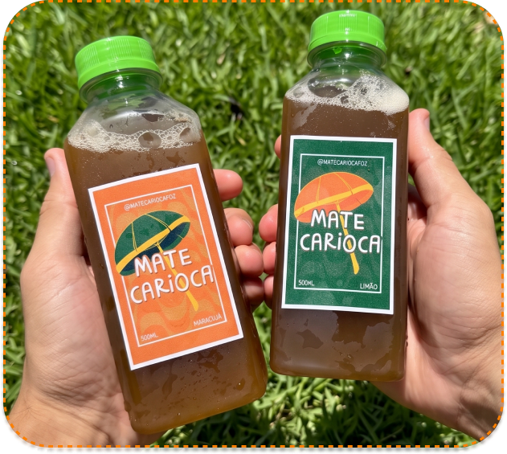
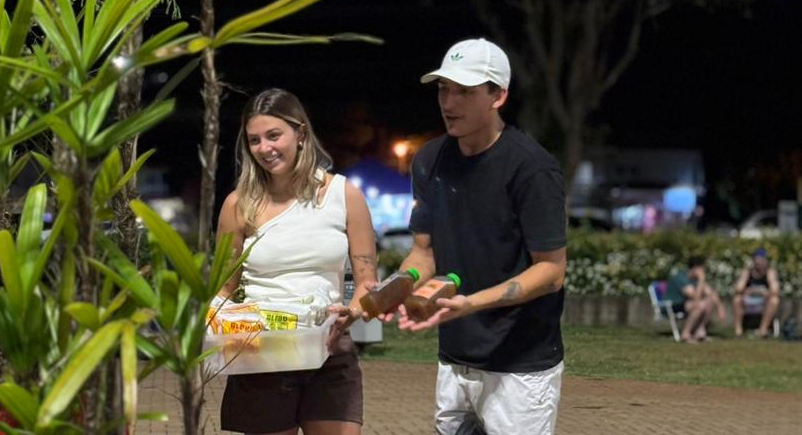
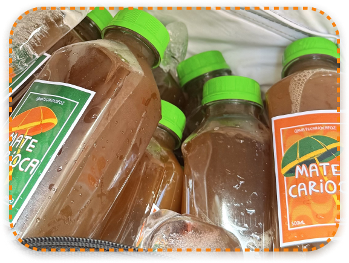
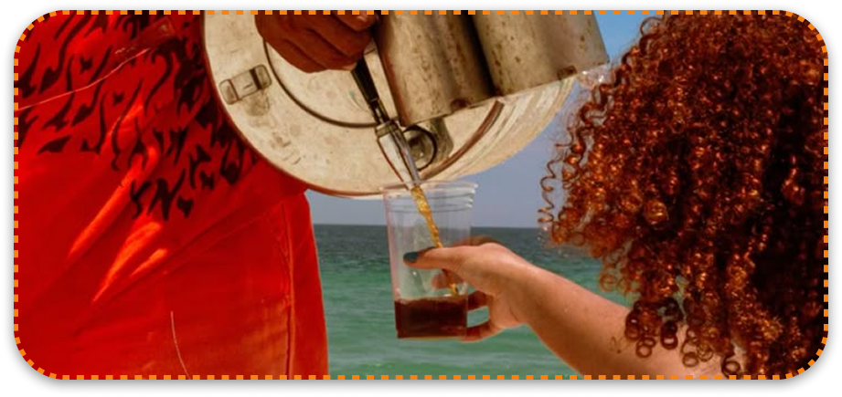
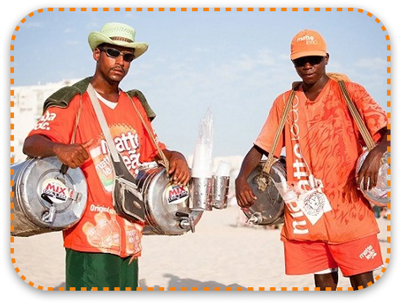
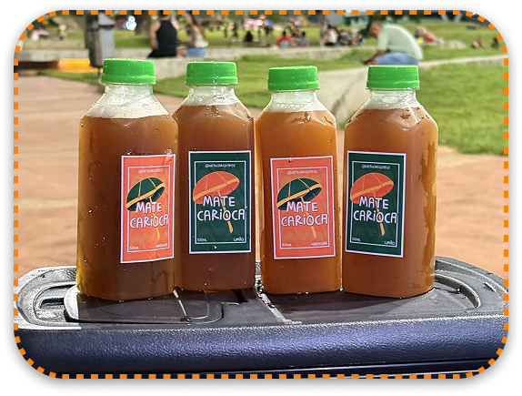

Apaixonados por praia, verão e mate. Nas férias no Rio, a gente se viciou no clássico chá mate gelado de praia... Voltamos pra casa com saudade daquele sabor.


Servimos pros amigos e virou febre. Todo mundo pedia mais! Postamos nos stories... e os pedidos começaram a chegar. Foi assim que nasceu o nosso mate. Direto do clima de praia do Rio pra Foz.

Nos anos 1950, o Rio de Janeiro adaptou o mate do Sul do Brasil para o verão.
Gelado, com limão e perfeito para a praia.
Foram os vendedores ambulantes, com seus galões e uniforme laranja
que transformaram o mate em símbolo das praias cariocas.
Em 2012, o mate de praia foi reconhecido como Patrimônio Cultural e Imaterial do Rio de Janeiro.


Trouxemos esse clássico das praias do Rio pra refrescar a fronteira também, já experimentou?
Faça seu pedido! >